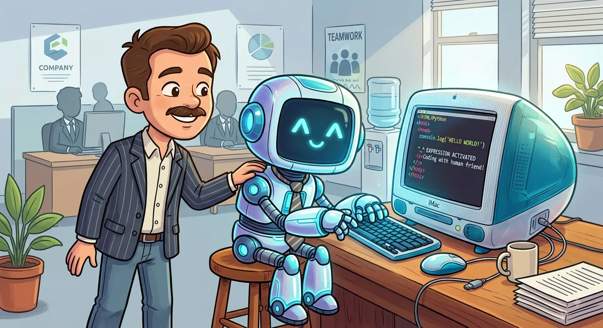

Programming With AI

It's undeniable at this point that artificial intelligence, more specifically large language models and transformers are revolutionizing software development among other things. I knew it would happen before it was in the news, after all I wrote my bachelor's thesis on Deep Learning back when it was new thing. Too bad I didn't pursue that path because I hated data analysis, you see, back in 2017 AI was mostly glorified spreadsheet jobs done on Jupyter Notebooks, but I digress. The speed of progress after ChatGPT launched has still astonished even me.
The AI programming revolution thus hit me particularly hard as I was laid off in one of the many layoff rounds due to economic downturn and dwindling demand for software consultants (Vincit wasn't the only consulting company in Finland affected, Gofore and Siili also laid off swaths of people). Simultaneously with darkening job markets, the AI revolution was happening on a full speed and beyond. Programmers truly seemed to be going the way of the dodo. It was devastatating to witness. As I'm writing this, Finland has the highest unemployment rate of all of Europe, surpassing Spain.
Shortly after getting unemployed and getting over the fact that I can not simply hop on next job like before in the ongoing Finnish job market situation, I decided to start developing my skills for the inevitable future where AI will generate most if not all of code. It was pointless to pretend otherwise, to keep head buried in sand and wish it goes away. Evolve or die.
When I began augmenting myself in earnest late summer 2025, my experience that far was using ChatGPT very much as an interface to StackOverflow and documentation that could be asked for instant clarifications and examples. Boy have I come far since.
# Tier 1: Prompting
First, there was a web browser and chatbot. I started by asking ChatGPT to produce small parts of code with given function signatures to fit my work, that I then would eyeball to see if it seems right and then copypaste that into the editor. Rinse and repeat.
Now that of course seems primitive, and it was. It was more often than not slower than writing the bit myself. But for libraries I wasn't familiar with it made sense to generate the code directly instead of merely asking for an description on how to do something and then writing it. Over time I began generating longer and longer task functions. Working like this was quite doable thanks to my habit of making my programs functional (as in functional programming pattern), so most of the codebase builds like legos and its parts work in relative isolation.
Chatbot approach is still useful for simple scripts. After all, scripts are self-contained small applications. Formulate the task and operating environment well enough and it usually spits out an usable script on the first try.
# Tier 2: AI Assisted Coding
VSCode has been my go-to programming tool for a decade. It had a good autocomplete for most languages and extensions for just about anything. So when Microsoft decided to integrate LLM into it in form of Copilot, it could only get better? Right? Wrong!
To my own surprise, I really hated Copilot-enabled, AI assisted autocomplete. I found the automatic suggestions breaking my train of thought all the time, especially when Copilot wanted to autocomplete comments. Here I am about to write a terse comment about why something is where it is, or a descriptor how to safely tweak something should need arise. Then Copilot begins suggesting some stupid novel length poems.
Same play happens with code completions. I usually have a pretty good idea with where I'm going at and why when writing code. Then Copilot begins suggesting some incomprehensible guesswork based on method signature or variable name, of which reading would take more time than just writing it. In many ways I found this AI assisted coding way of working hugely counterproductive.
# Tier 3a: Vibe Coding
One of my earliest scares was that of vibe coding. The idea that non-technical people could simply wish software into existence simply. That would have been truly career ending and the idea filled me with despair. Until I tried it myself. And it doesn't work.
Vibe coding is a well established term by now and the idea is such an easy sell it has yielded insane valuations for startups such as Lovable. But it doesn't work. Vibe coding is a similar endeavour to playing slot machines, at best you will get a good approximation of what you need. You will roll the slots again and again. Insert more tokens into the vibe slot machine and hope for the best. That is what pure vibe coding is. I've read numerous horror stories online where non-techies burn through thousands of dollars for unsatisfactory end-result they don't even understand.
Then, for developer like me, Lovable was more like tech demo. I told it to generate me a monolithic Go application, standard library only plus Vue frontend. But good folks at Lovable really have been drinking node_modules kool-aid as it couldn't do my request, alas, it can only generate React slop. Utterly unsuitable for any enterprise work.
Lovable is perhaps the most pure super casual vibe tool there is. Then there is the other variant of vibe coding that uses agentic methods, but the end-result is the same lottery because of what a vibe coder is. In my definition vibe coder refers to non-technical person without software developer skills. And because they have so mostly unknown unknowns - things they don't know exist - they can't even begin asking about such things as suitable architecture nor can they articulate precisely enough what they want because they lack the vocabulary. So, they will be stuck on slot machines.
# Tier 3b: Agentic Coding
Agents can be used to automate almost the entire process of generating some mvp slop from one prompt, so what separates agentic coding from vibe coding? Agentic programmer is an a actual tech literate software engineer that leverages AI automation to accomplish well formulated goals. That is my definition. This difference makes all the difference as it makes shipping working products fulilling specs actual possibility.
Agentic coding is where AI-augmented software development really clicked for me. Where vibe coding is a token eating slot machine bordering on scam, and inline AI code completion tools like Copilot are more in way than useful, agentic coding is where the real deal is at. It's one of those rare hype terms and concepts that are actually real.
In agentic coding, you direct AI agents to write the code by describing a wanted end-result and how it should be achieved. You have to embody the trinity role of a product owner, an architect and a tech lead. You can't think like programmer anymore, but you have to understand programming well to guide it well. You tell it what, how and why. You set boundaries and definition of done.
My agentic engineering began with Google Gemini. Gemini looked like the best deal to get started, something that was a mistake but it taught me a lot. Now let me tell you the ways how Google AI Pro subscription is a mistake. It looked like a great deal, getting plethora of different AI tools and 5TB Google Drive. Nice. Because I didn't know any better and had nothing to compare it to, I was happy with Antigravity and was wondering why people online were complaining about it so much. So I happily used it for four months.
The thing that (luckily) scared me shitless and off Google was noticing small print in user agreement, stating that if Google thought it was used wrongly (if using third party applications and such to use subscription and things like that), it would be grounds to warrant account termination. Not the Google AI Pro subscription, but termination of your entire Google account. Yikes. No way josé, I'm not taking any such risk. You never know with these things. So, I promptly stepped the fuck away from Antigravity and kept my distance to rest of Google's AI suite too, just to be on the safe side.
Next I had to decide which subscription to get next. At this point I was well aware of all the frontier models. Claude, ChatGPT, Grok. Watching Anthropic and OpenAI duking it out was of course on my feeds now. I was very much inclined to go with Claude next, but I didn't like the online chatter around its usage limits, which many people said were really bad. Those limits were an annoyance on Gemini Antigravity too, I don't like how they run out and force you to wait 5 hours before continuing, and then on flipside waste your subscription money when you don't use it. It's completely backwards on how a normal human developer operates. Subscription makes sense if you are a machine working at an even pace of token consumption. Google AI Pro subscription had also annoyed me with the nagging tought that Google has all these AI tools but I don't care for most of them.
Thus, after some research into price/performace, I ended up going with DeepSeek access for my next phase. Because it's cheap and thus easy to dip my toes into increasingly complex and autonomous setups. 20€ is plenty, online chatter said. So, I got myself a DeepSeek API key and then began choosing a successor for Antigravity.
There are so many tools and harnesses for agentic coding it is a easy to get overwhelmed as when choosing a model. So I went with a popular choice that is both open-source and allows using whatever: OpenCode. I've been content with OpenCode for most things. And now I know for sure: Antigravity was straitjacketed. Compared to OpenCode it asked permissions all the time, even when it made no sense such as to do something inside project folder. I designated a project folder for a reason, git is in place to revert if AI or me goofs, so go ahead. OpenCode worked as expected, it very much only asks permission only if it wants to do something outside project folder (deny deny deny).
I also had no idea about how much tokens cost and was happy with Gemini limits. If there was one positive about Gemini among online chatter, it was that it had generous limits compared to 20€ ChatGPT and Claude subscriptions. Of course, the fact that Antigravity tended to interrupt everything all the time may play a role in that, you can't burn tokens if you are hitting Allow every few moments. Now, combined with DeepSeek unhampered by usage limits and much more sensible OpenCode, I could finally begin to see real value in this agentic programming. Using agent via API is the key. It removes the nagging feeling of not utilizing subscription to its fullest if not using it all the time, and it also won't stop working due to allowance quotas right when things get good. It gives room to breathe. And this far I have not been able to match the 22€ Google AI Pro offering on DeepSeek, my monthly usage is typically around 3€, predominantly using v4 Flash.
Tier 4: Autonomous Agents
I admit, I skipped OpenCode. I have a habit of figuring things out from the ground up instead of climbing up the tree ass first. I didn't have the fundamentals yet when the Clawdbot Moltbot OpenClaw hit the scene. I was also married to Gemini at that point, which was of course not an option outside Antigravity, which added a great deal to my Gemini and Google AI ecosystem grievances. I also did not have spare hardware to let agents run loose in it.
After getting sufficiently comfortable with OpenCode to manage most of the tasks I could think of, and now that I was liberated from subscription imposed limits and had a cheap but capable model to play with, I finally began looking into autonomous agents. Carefully. By the time I had arrived at this point, OpenClaw was already last season, and Hermes by Nous Research was the new cool thing.
I installed Hermes and began building my skillset with it like I had done with OpenCode. By building software. For that purpose, Hermes is a suitable replacement. It is also redundant and laggier, especially when switching tabs. For the purpose of generating code, it does have at least one up on OpenCode: the ability to queue commands. That was something I was missing from OpenCode. With command queueing, the work rhythm changes for the better. While the agent generates code, I can review code elsewhere in the software, or test-drive already implemented features, and then queue new instructions as I spot things that need changing. Or if I notice from thinking output it got something wrong I can correct it immediately afterwards without interruption. Without queue, there is always waiting for it to finish its task and then issuing a next command.
As noted earlier in this chapter, I didn't have spare hardware to let it really loose and that is still the case. So this is where my autonomous agent experimentation has ended. For now. I also returned to OpenCode just to be on the safe side and because Hermes UI is laggy compared to OpenCode.
Lessons learned this far
In a short period of time I've advanced from asking AI chatbot about documentation and generate examples, to utilizing it fully to code generation. Most important aspect in this progress has been the community. AI is still in early phases. Tools and language models are changing quickly. Wisdom of the masses becomes applicable. If something gets often mentioned positively, or if something gets negative flak, it is worth to pay some heed. What was good month ago may no longer be. Good is relative in these matters.
In similar vein, it is not worth it to lock yourself mentally in one tool or one model. It has increasingly become apparent over this year, that AI is becoming a commodity. There is little to no moat. When ChatGPT came and OpenAI had a brief monopoly on applicable LLM technology, it appeared as if there was one. However, computer science research is open, the methodology and math behind large language model neural networks with their backpropagation and gradient descent is all open. That's why there is no moat.
One of the best lessons this far has been that of token efficiency, and that is something that can't be replicated just like that. People online post huge amounts of token spend running on top models. 200€ Claude subscriptions and those who use API may run into thousands. Meanwhile I was first quite capable with Gemini Flash and then later with DeepSeek Flash. Fast cheap models. That is thanks to good forward-planning. I know beforehand what the architecture should be and what tech to use to build it, how the database should be structured and expressing intent. Turns out, planning ahead pays off, literally, in reduced costs. Well planned is half-done. Plan a waterfall, work agile.
That is the moat.